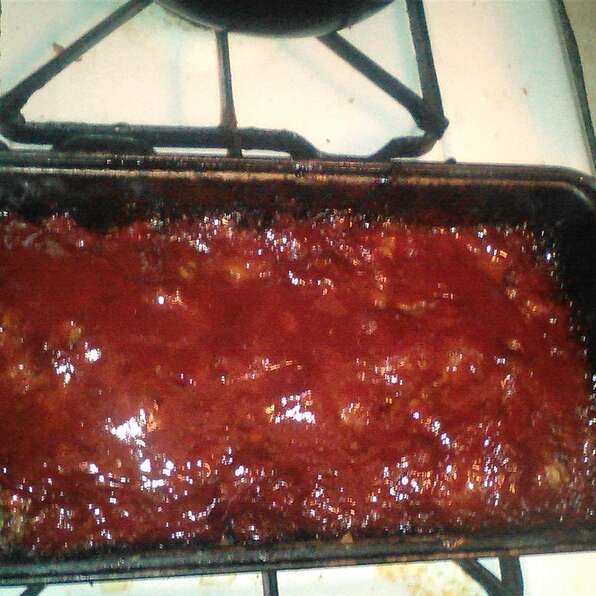

Tennessee Meatloaf

Pretty much just a big ol hunk o' ground meat
Ingredients
Brown Sugar Glaze
- 2 cups of ketchup
- 1 cup of brown sugar
- 0.5 cup of cider vinegar
Meatloaf
- cooking spray
- 4 oinons, chopped
- 2 green bell peppers, chopped
- 8 cloves garlic, minced
- 8 large eggs, lightly beaten
- 1 tablespoon and 1 teaspoon of dried thyme
- 1 tablespoon and 1 teaspoon of seasoned salt
- 0.5 tablespoon and 0.5 teaspoon of ground black pepper
- 2.5 tablespoons and 0.5 teaspoon of prepared mustard
- 2.5 tablespoons and 0.5 teaspoon of Worcestershire sauce
- 0.5 tablespoon and 0.5 teaspoon of hot pepper sauce (such as Tabasco)
- 2 cups of milk
- 3 cups of quick cooking oats
- 4 pounds of ground meat
- 2 pounds of ground pork
- 2 pounds of ground veal
Steps
- Step 1: Combine ketchup, brown sugar, and cider vinegar in a bowl; mix well.
- Step 2: Preheat oven to 350 degrees F (175 degrees C). Spray two 9x5-inch loaf pans with cooking spray or line with aluminum foil for easier cleanup.
- Step 3: Place onion and green pepper in covered microwave container and cook until softened, 1 to 2 minutes. Set aside to cool.
- Step 4: In large mixing bowl, combine garlic, eggs, thyme, seasoned salt, black pepper, mustard, Worcestershire sauce, hot sauce, milk, and oats. Mix well. Stir in cooked onion and green pepper. Add ground beef, pork, and veal. With gloved hands, work all ingredients together until completely mixed and uniform.
- Step 5: Divide meatloaf mixture in half and pat half of mixture into each prepared loaf pan. Brush loaves with half of the glaze; set remainder of glaze aside.
- Step 6: Bake in preheated oven for 50 minutes. Remove pans from oven; carefully drain fat. Brush loaves with remaining glaze. Return to oven and bake for 10 minutes more. Remove pans from oven and allow meatloaf to stand for 15 minutes before slicing.